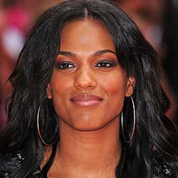

|
| Home The Doctors The Companions The Villians Show History |
Frema AgyemanFreema Agyeman (/ˈfriːmə ˈɑːɡjəmən/; born Frema Agyeman on 20 March 1979) is an English actress who is known for playing Martha Jones in the BBC science fiction series Doctor Who and its spin-off series Torchwood. Following her departure from Doctor Who and guest spots in BBC programmes Survivors and Little Dorrit, Agyeman held a starring role as Alesha Phillips in the crime procedural drama Law & Order: UK between 2009 and 2012. In 2013, she made her US television debut on The CW's teen drama The Carrie Diaries as Larissa Loughlin, a style editor at Interview magazine.
|
|
Madeleine Schwartz Ann Marie Skjold |
Content derived from Dr. Who Wikipedia.
|